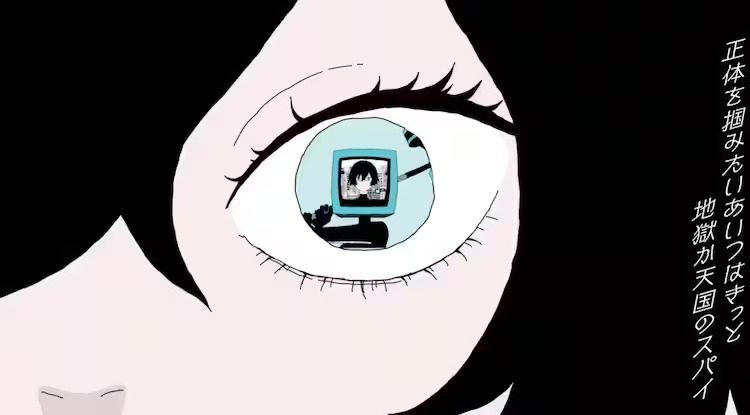

Ado
D Major / 137.79BPM
「行方知れず」のミュージックビデオを手掛けたのは、絵師のsakiyama。映像では、歌詞からも読み取れる“ネット社会”をテーマに、主人公が様々な敵に立ち向かっていく姿が描かれている。 なお、新曲「行方知れず」は、椎名林檎がホラー映画『カラダ探し』の主題歌として書き下ろしたもの。“カラダを全て探し出すまで、明日が来ない”絶望的な無限ループを描いた人気携帯小説を、橋本環奈、眞栄田郷敦、山本舞香、神尾楓珠ら話題のキャストで実写映画化する。
【Ado コメント】— 椎名林檎さんから曲を書き下ろしていただけるなんて本当に夢のようで凄く嬉しくて、「うわぁ、私林檎さんに曲を書いていただいたんだ！」という感じの林檎さんの魅力が沢山詰まった楽曲です。私にとっても椎名林檎さんはスターであり、憧れであり歌い方にも影響を受けているので、尊敬の気持ちと、今回のこのコラボは幻なのかなって、嘘じゃないかと思うくらいとても貴重な経験です。林檎さんに曲を書き下ろしていただけて、さらに『カラダ探し』の主題歌を担当させていただけるのは、この命が尽きてしまうんじゃないかと思う程、この世の全ての運を使い果たしているくらいに光栄です。(収録は)林檎さんにディレクションしていただきながら作品を完成させていきました。林檎さんだからこそ表現したい事が林檎さんの中にあり、ちゃんと応えられるかの不安はありましたが、沢山アドバイスをくださって勉強になりました。こういう歌い方もあるのか、という発見もあり貴重な経験になりましたし、素晴らしい作品になりました。早く皆さんに聴いていただきたいです。
【椎名林檎 コメント】— Ado氏の声を初めて拝聴したとき「なんと理想的などら猫声なんだ」と慄きました。二十五年前、拙作無罪モラトリアムを出してしまう前にこの響きに出会せていたら、ぜんぶ彼女に歌ってもらっただろうとも思います。そう、私は作り手冥利に尽き続け、いまごろさぞやそっくり返っていたことでしょう。毎度野性味溢るる雄叫びを聴かせてくれるAdo氏ですが、制御する知性にも恵まれた職人。そういうところも好きです。媒体から批評を求められる度「先ずは曲に込めさせてくれ」と思っており、きょう迄つい訥弁になってしまい勝ちでした。晴れて発表される、この“行方知れず”のなかでは、一転能弁にあれこれしたためているつもりです。そしてAdo氏が応えてくれています。よろしければぜひご視聴くださいませ。
The music video for "Yukue Shirazu" was handled by the illustrator sakiyama. In the visuals, the theme of the "internet society" can be read from the lyrics, depicting the protagonist confronting various enemies. It's worth noting that the new song "Yukue Shirazu" was written by Shiina Ringo as the theme song for the horror film "Karada Sagashi" ("In Search of the Body"). The song tells the story of a desperate and infinite loop: "Until the body is completely found, tomorrow will not come." This popular mobile novel is being adapted into a live-action film featuring a cast of popular actors such as Kanna Hashimoto, Gouta Maeda, Miu Yamamoto, and Kaito Kamiyama.
Ado's Comment: I'm incredibly happy that I could have a song written by Shiina Ringo, and it feels like a dream. The song is filled with Shiina Ringo's charm, and I can't believe that she wrote a song for me. Shiina Ringo is a star for me, someone I admire, and her singing style has influenced me. So, the collaboration this time feels like a precious experience, almost like a dream or something unreal. Having a song written by Shiina Ringo and being in charge of the theme song for "Karada Sagashi" is an honor to the point where I feel like I've used up all the luck in my life. We worked on the production with Shiina Ringo directing me, and there was anxiety about whether I could properly respond to what Shiina Ringo wanted to express, but she gave me a lot of advice, and it was a learning experience. I discovered different ways of singing and had valuable experiences, resulting in a wonderful piece of work. I can't wait for everyone to listen to it.
Shiina Ringo's Comment: When I first heard Ado's voice, I was amazed at how ideal her dragon-like voice was. If I had encountered this sound twenty-five years ago, before releasing my work "Muzai Moratorium," I would have had her sing everything for me. Yes, I continue to be blessed as a creator, and by now, it must have come full circle. Ado always provides a wild roar, but she is also a skilled craftsman with the intelligence to control it. I like that about her. Every time I'm asked for criticism from the media, I think, "First, let the music speak for itself," and until today, I've been taciturn. In the midst of the unveiling of "Yukue Shirazu," I am expressing various thoughts in a more articulate manner. And Ado responds. If you're interested, please give it a listen.